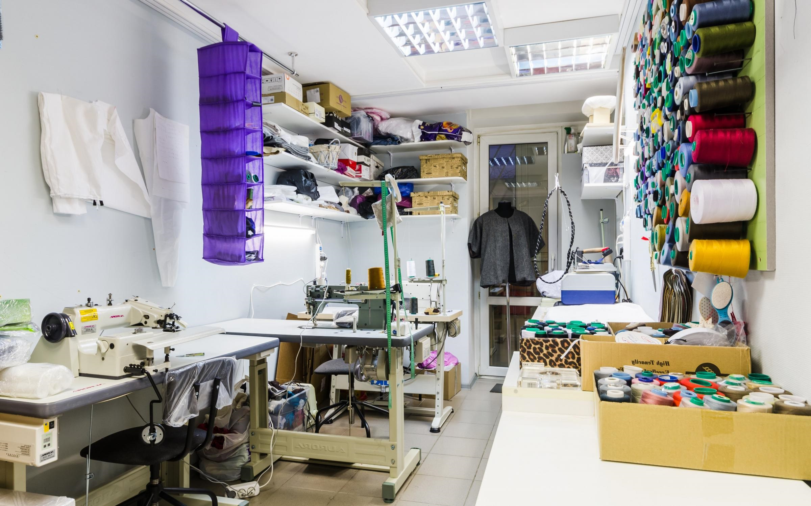
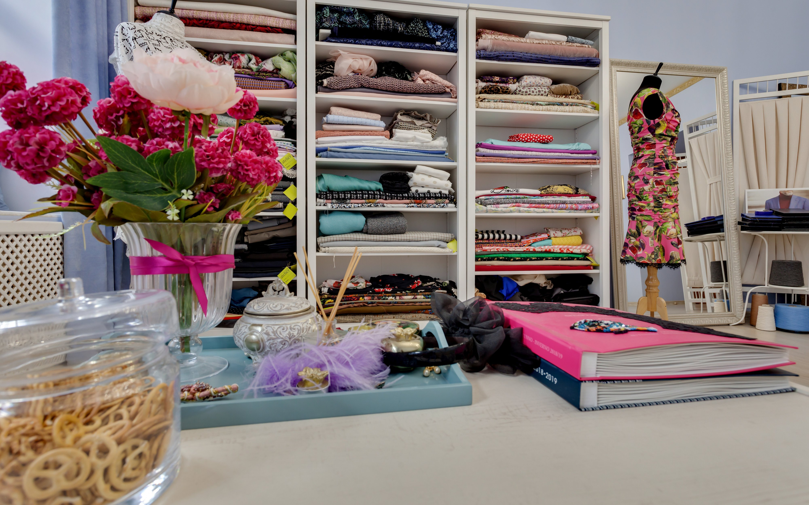
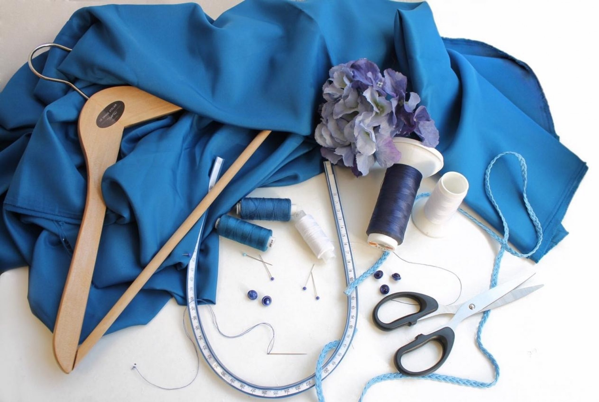

{% load static %}
<link href="{% static 'css/slider.css' %}" rel="stylesheet">
<div class="adaptivny-slayder">
  <input type="radio" name="kadoves" id="slaid1" checked>
  <input type="radio" name="kadoves" id="slaid2">
  <input type="radio" name="kadoves" id="slaid3">

  <div class="kadoves">
  <label for="slaid1"></label>
  <label for="slaid2"></label>
  <label for="slaid3"></label>
  </div>

  <div class="adaptivny-slayder-lasekun">
  <div class="abusteku-deagulus">
  
  
  
  </div>
  </div>
</div>